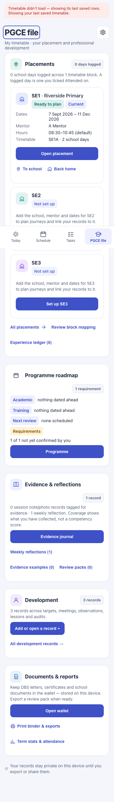
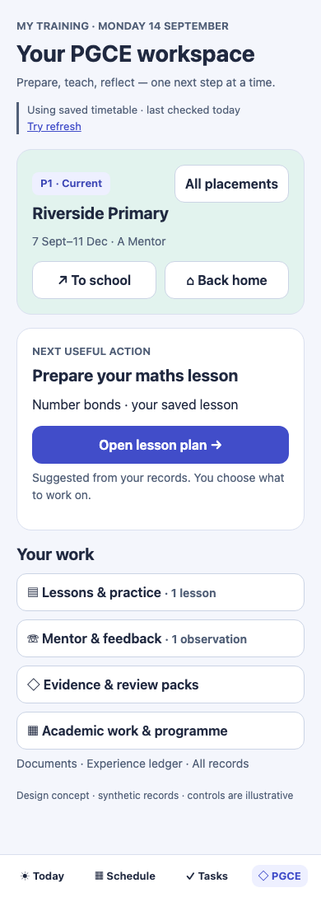
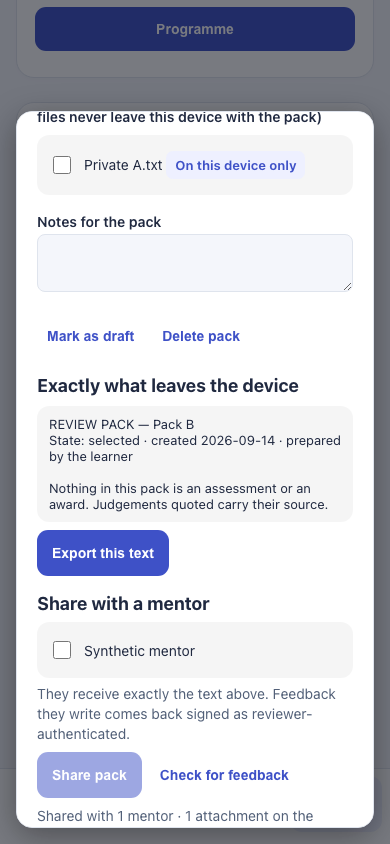
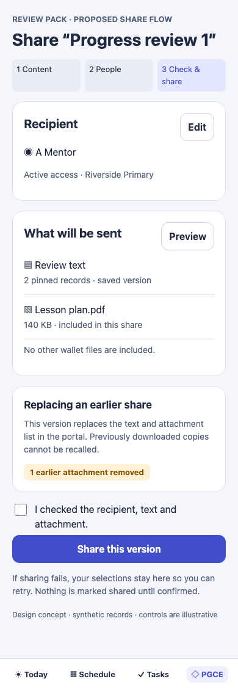
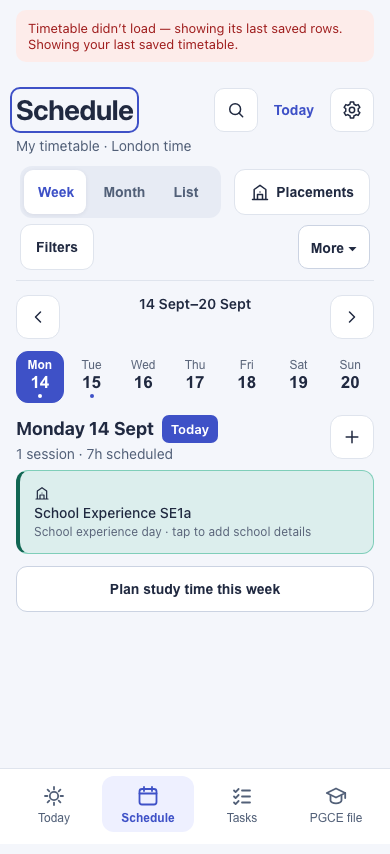
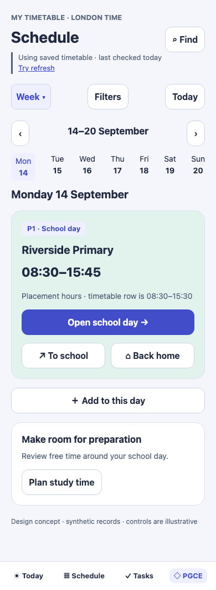

Before: actual local app, synthetic records, external requests blocked. After: illustrative design concepts, not implemented. Blue heading outlines in before images are keyboard focus, not a layout defect. Full-page captures include the fixed bottom navigation at its viewport position.





